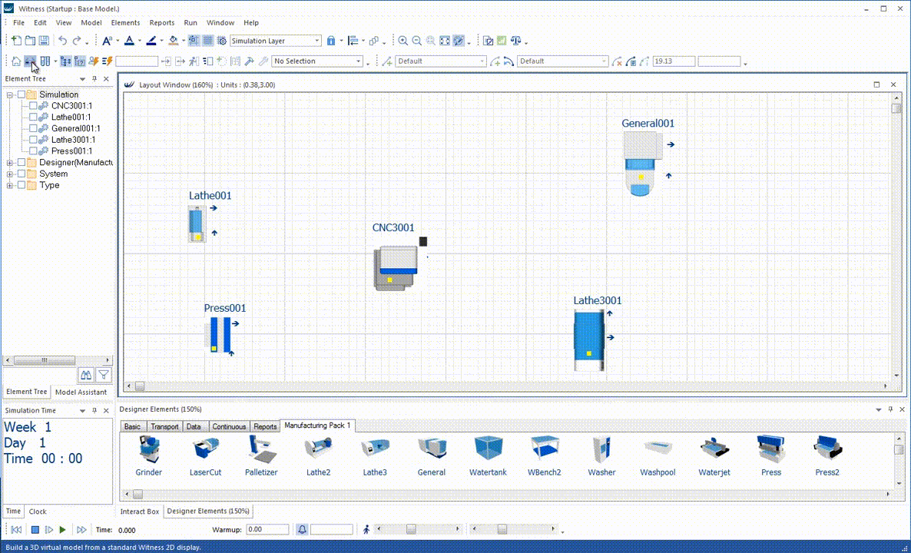
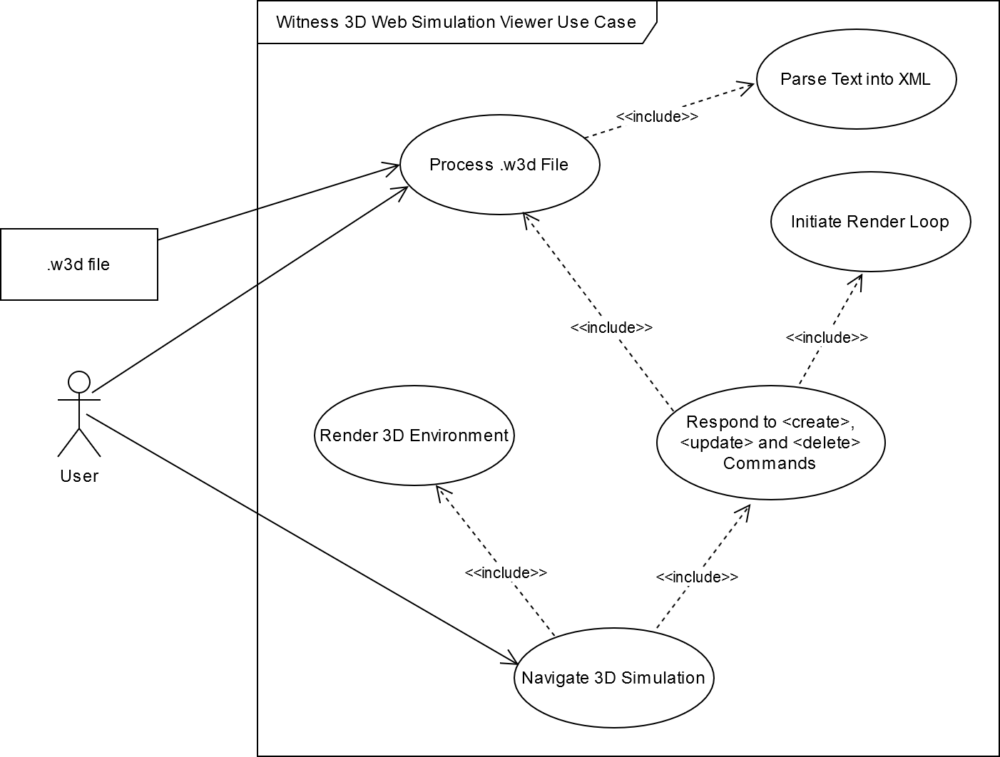
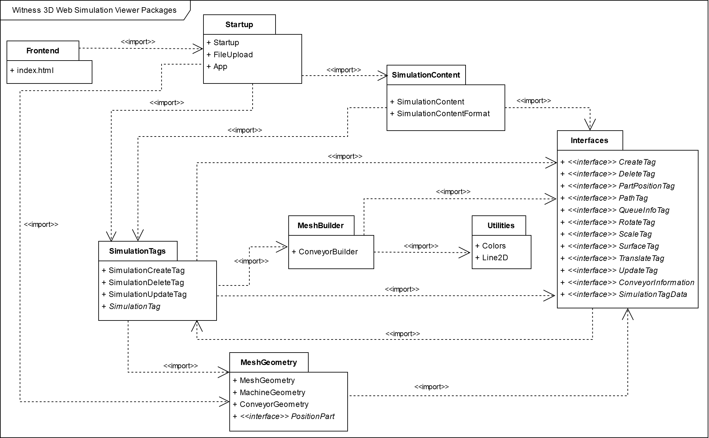
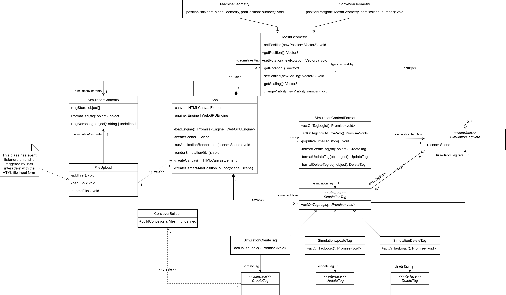

Witness 3D Web Simulation Viewer is a 3D web app that can show simulations running over time.
The simulations will come from Witness. Witness is a discrete event simulation modelling environment allowing domain experts to create simulation models of systems. Witness runs on Windows desktop. Witness has an option to create a 3D view from positional information in the 2D view. From the 3D visualisations in Witness, a detailed simulation trace output can be captured that describes all the 3D movements in the simulation over time.
The project is to use the simulation trace output to visualise these simulations running in 3D on the web. Because such visualisation capabilities come built into Witness, this project is a proof-of-concept demonstrating how feasible it is to shift these visualisation capabilities onto the browser and, through this, identify the costs and potential limitations.
By shifting the visualisation of simulations onto the browser, the intended benefit is to access opportunities for real-time collaboration by visualising the simulation from the same trace output file; the ability to visualise simulations will no longer be restricted to Windows desktops with an installation of Witness.
There are different approaches that can be taken to achieve these aims (eg, WebGL vs. WebGPU). The project will compare the different approaches and justify the approaches it takes.
Demonstration of Witness Desktop 3D Visualisation Capabilities 
Use Case Diagram 
Note: .w3d is the official filename extension of simulation trace output files generated from the main Witness application. Any files uploaded to Witness 3D Web Simulation Viewer for processing without this filename extension will immediately be rejected. Furthermore, such file must contain the expected XML format, relaying the simulation events through the core <create>, <update> and <delete> commands. An error will be thrown if Witness 3D Web Simulation Viewer is unable to parse the uploaded .w3d file following the expected XML structure. Reference to the expected XML format can be found in Witness W3D Queue Implementation and WITNESS-Unity Proof of Concept 01.
Package Diagram 
Class Diagram 
Babylon.js, Vite and TypeScript will be used to create the web application. Creating a Babylon.js web application using a Vite development environment is an established approach with an official page on the Babylon.js documentation. An important advantage is that, unlike other module bundlers for JavaScript such as Webpack, Vite is able to reflect changes made to the source code immediately; unlike Webpack, it does not need to compile all the files into a JavaScript bundle before the web app hosted on the development server can reflect the new changes. This makes development quicker with Vite. Furthermore, Vite has fewer config files than its competitors, such as Webpack, and is therefore easier to maintain.
Run on a browser with native WebGPU support, such as Google Chrome, Witness 3D Web Simulation Viewer will automatically detect such compatibility and respond by initialising Babylon.js using the WebGPUEngine class. Run on a non-compatible browser and Witness 3D Web Simulation Viewer will intialise Babylon.js using the standard Engine class, which uses WebGL2 rather than the newer WebGPU JavaScript API.
(Note: As described in the official documentation, full Babylon.js support with WebGPU is still a work in progress, and, as a result, Witness 3D Web Simulation Viewer is more likely to encounter errors when using the WebGPU engine. Babylon.js aims to achieve full feature parity with WebGPU by version 5).
npm i (short for install) to install Babylon.js, Vite and the other npm dependencies.npm up (short for update). Based on the configuration in package.json, this will update the node packages to all future minor and patch versions, ensuring that the latest versions are used without breaking compatibility. From time to time, this command should be run to minimise the chance of bugs and security vulnerabilities.npm run dev to begin a development server running the code. The server will begin on port 4000.npm run build. This will bundle the application, outputting this bundle to the dist folder within the root directory, creating this directory if it does not already exist.npm run preview to see the exported code bundle running in a local development server.dist folder can be uploaded to an external server, deploying the application..husky\pre-commit contains the contents of a pre-commit Git hook as per the Husky standard. This script will thus run each time you run git commit. Along with linting staged files to enforce code style, the script will run a Node.js script to automatically update the patch version number as held within package.json. Such updated package.json file will automatically be added to the outgoing commit.
The --no-verify (shortened to -n) Git commit flag can bypass the pre-commit hook. Therefore, run git commit -n to make a commit without updating the version number. Important: this should be used sparingly, only for commits involving very trivial changes.
Witness 3D Web Simulation Viewer is developed and debugged in Visual Studio Code. It is recommended to use Visual Studio Code for debugging due to its built-in debugging capabilities.
To do open a debugging environment in Visual Studio Code, open a JavaScript Debug Terminal and run npm run dev to begin the development server as usual. From here, the application will stop at any breakpoints set in Visual Studio Code.
Alternatively, many web browsers offer debugging capabilities that can be used for debugging Witness 3D Web Simulation Viewer.
Witness 3D Web Simulation Viewer uses the Vitest testing library, created by the same team as the Vite build tool and comes with Vite integration, to create unit tests.
Test configuration is located in the vitest.config.ts file, which is also where the Vite configuration is located.
npm test. This will initiate a single run of the unit tests.A successful test run will produce code coverage. The directory for code coverage is coverage, which is ignored by Git.
A run of Vitest unit tests can be debugged in VS Code. To do this, open a JavaScript Debug Terminal and run npm run test. For more information, go to the Vitest official documentation.
As Witness 3D Web Simulation Viewer is a prototype, its compatibility is limited, and, in this instance, its visualisation capabilities is limited to two trace output files Quick3D.w3d and Quick3D-Large.w3d, both of which are found within ./WitnessModels.
Quick3D.w3d is the simulation trace output file that was used during the development of Witness 3D Web Simulation Viewer, and for this reason, compatibility is guaranteed. It represents the Quick3D trace file capture of running the Quick3D.mod simulation model (also found within ./WitnessModels) for 200 minutes. Once those 200 minutes are up, the various parts and labour elements will be deleted.
Quick3D-Large.w3d represents the Quick3D trace file capture of running the Quick3D-Large.mod simulation model also for 200 minutes, a scaled-up version of the Quick3D.mod simulation model. To test the scalability of the Quick3D function in Witness and note the differences in performance, the Quick3D-Large.w3d simulation model consists of 12 separate instances of the original Quick3D.mod simulation model running simultaneously. Thus, its corresponding simulation trace output file can be uploaded to Witness 3D Web Simulation Viewer for similar purposes: to test the performance capabilities of the application knowing that it already has compatibility of the original Quick3D.w3d is the simulation trace output file. Likewise, it will delete all of the parts and labour elements in the simulation when 200 minutes (in the simulation) have passed.
Further information on the difference in performance between the Quick3D.mod simulation model and the scaled up equivalent Quick3D-Large.mod can be found in the witness-dev-witness-unity-spike document linked to below.
Evidence of the success of Witness 3D Web Simulation Viewer was provided on the 11th of March 2025 in the form of a user testimonial document from the Witness team. (Witness 3D Web Simulation Viewer Feedback). This document describes how the deliverable was demonstrated to the simulation group of 40 people and concludes that the deliverable gives the Witness team the confidence that they "can utilize a web visualization technology such as WebGPU, using a library like Babylon js, to extend the reach of dynamic 3D simulation visualization beyond the desktop."
This README was last updated on 21 April 2025.